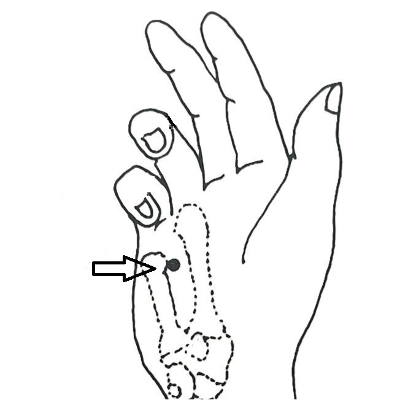
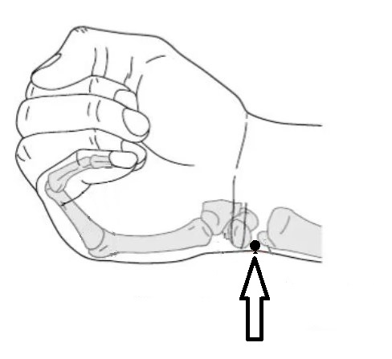
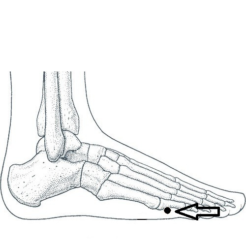

Jet Lag Pro: A Mobile Platform for Evaluating Chronoacupuncture as a Tool for Jet Lag Management
A Pilot Study Proposal
Steven Schram PhD, DC, LAc
© 2025 Steven Schram. All rights reserved.
Abstract
Jet lag affects over 90% of long-haul travelers, yet conventional treatments yield inconsistent results. This study proposes evaluating chronoacupuncture, a Traditional Chinese Medicine approach using acupressure on "horary points" aligned with destination time zones as a novel jet lag intervention. We present the JetLagPro mobile application as a research platform to systematically test this method while collecting user data on symptom severity and recovery patterns using an on-line survey. This represents the first formal investigation of chronoacupuncture for jet lag management, aimed at either validating this traditional approach or redirecting research toward more effective alternatives.
Keywords: chronoacupuncture, circadian rhythm, jet lag, horary points, Traditional Chinese Medicine, acupressure
Introduction
The global increase in air travel has made jet lag a widespread health concern, with economic implications including reduced productivity and increased healthcare costs. Current interventions of light therapy, melatonin, strategic sleep and varied meal scheduling show variable efficacy, particularly for eastbound travel and longer distances. Individual differences in circadian flexibility further complicate treatment approaches.1
Acupuncture theory offers an alternative perspective through its understanding of temporal physiology. The Chinese Organ Clock, documented in classical texts dating back millennia, describes a 24-hour cycle where different organ systems reach peak activity during specific two-hour windows. This temporal understanding parallels modern discoveries in circadian biology, where peripheral clocks in organs coordinate with the central circadian pacemaker.
Chronoacupuncture applies this temporal understanding by stimulating specific (horary) acupuncture points during their designated active periods. For jet lag applications, practitioners adjust timing to match the destination time zone rather than local time, theoretically facilitating faster circadian adaptation. Despite advocacy and use among acupuncturists, this approach lacks systematic evaluation, representing a significant gap between traditional practice and evidence-based medicine.
Circadian Biology: Mechanisms of Internal Clocks
Circadian rhythms synchronize physiological processes to a 24-26 hour cycle, governed by the suprachiasmatic nucleus (SCN), a hypothalamic cluster of neurons entrained by light via melanopsin-containing retinal cells.2,3 The SCN coordinates peripheral clocks in organs like the liver and heart, which regulate tissue-specific functions including vascular function and blood pressure regulation.4,5 Core clock genes (Clock, Bmal1, Period, Cryptochrome) drive a molecular feedback loop, producing rhythmic gene expression.6 Synchronization is maintained by Zeitgebers, external signals such as light, temperature, activity, and meals.7
Jet lag occurs when rapid time zone changes desynchronize these clocks, delaying adaptation, particularly for eastbound travel.1 Adaptation rates vary widely, underscoring the need for novel interventions. This scientific framework parallels acupuncture's temporal perspective, as embodied in the Chinese Organ Clock, suggesting a synergy between modern circadian biology and traditional practices.
Acupuncture Theory: A Temporal Understanding
Acupuncture theory maps physiological processes to a 24-hour cycle through the Chinese Organ Clock, where vital energy (Qi) flows through 12 meridians, each peaking during a two-hour window.8 Horary points are specific acupuncture points along these meridians that are most active during these peak periods (Figure 1).
Over 40 years ago, Khoe and then Amaro postulated that stimulating horary points sequentially could help realign organ systems with new time zones, addressing jet lag's circadian misalignment.9,10 While jet lag was unknown in ancient times, the time theory of acupuncture meridians was well documented. This temporal understanding parallels the SCN-driven circadian rhythms described earlier.
While acupuncturists report using horary points for jet lag for many decades, no formal studies validate its efficacy, necessitating empirical investigation. This synergy between TCM and circadian biology informs the proposed method for testing chronoacupuncture's potential.

Figure 1: Chinese Organ Clock Visualization
Application of Chronoacupuncture for Jet Lag
Chronoacupuncture hypothesizes that stimulating horary points during their peak activity periods acts as a non-photic synchronizer of circadian rhythms with destination time zones. This approach leverages the Chinese Organ Clock and may modulate peripheral clocks via autonomic or hormonal pathways.
A recent comprehensive review validates that acupuncture significantly affects circadian biology, demonstrating measurable impacts on circadian clock genes, neurotransmitter regulation, and sleep-wake cycles (Wu & Zhao, 2024).11 While these studies employed known acupuncture points known to assist with sleep issues rather than the horary point methodology proposed here, they establish the neurobiological plausibility of acupuncture serving as a non-photic zeitgeber for circadian rhythm modulation.
Methods
The mobile application provides users with timing and instructions to stimulate specific horary points based on the destination time. Ideally starting at the airport (or anytime thereafter), users select the destination. The app immediately identifies the first active horary point matching the destination time. This process is illustrated below.

|

|

|
|
Screen 1: Basic Instructions |
Screen 2: Destination Selection |
Screen 3: Point Stimulation |
Scheduled reminders pop up at appropriate times prompting the user to complete a full 24-hour cycle. The messages are persistant and remain on the user's phone (or watch) until clicked. When clicked, the user is brought to Screen 3 of the mobile app which displays the correct horary point image besides a 6-second looping video showing how to stilimlate the point. Written instructions are provided below the images.
Horary Point Images

|

|

|

|
 |  |
|
LU-8 |
LI-1 |
ST-36 |
SP-3 |
HT-8 |
SI-5 |
|  |

|

|

|

|
|
|
BL-66 |
KI-10 |
PC-8 |
SJ-6 |
GB-41 |
LIV-1 |
After the trip ends, a notification is scheduled for 2 days later to ask the user to complete our website survey. Survey questions were based on and inspired by many jet lag questionnaires such as the Liverpool Questionaire, Columbia Jet Lag Scale, and symptom domains used in other studies. Participation is voluntary but encouraged by presenting a reward for free lifetime use of the app. This is limited to 1000 respondants. Access to the survey requires an app generated key to guarantee authenticity.
Survey Questions
Section 1: Pre-Travel Baseline
Please rate the severity of your typical symptoms before this trip:
- Sleep disturbance
- Daytime fatigue
- Difficulty concentrating
- Irritability
- Gastrointestinal issues
Section 2: Post-Travel Assessment
Please rate duration and severity of your symptoms after this trip:
- Sleep disturbance
- Daytime fatigue
- Difficulty concentrating
- Irritability
- Gastrointestinal issues
Section 3: Travel Context
- When did your flight land (date & time)?
- Direction of travel
- Number of time zones crossed
- Flight duration
- How many points did you stimulate in-flight?
- How many points did you stimulate post-flight?
- Did you sleep during the flight?
Section 4: Demographics (Optional)
- Age range
- Gender
- Travel experience
- Geographic region
- Primary travel purpose
Section 5: Additional Comments (Optional)
Open text field for additional feedback.
Expected Outcomes and Significance
This paper presents an exploratory study aiming to gather preliminary statistical evidence across diverse travel conditions, addressing the absence of formal chronoacupuncture studies. While anecdotal reports from acupuncturists suggest efficacy, this platform seeks to validate or refute chronoacupuncture as a non-pharmacological tool for jet lag management. At present, the app is in beta testing among a small number of users that that author has identifed as qualified to test the app. Within the next year, we hope to be able to present results. .
The proposed mechanism for chronoacupuncture involves stimulation of acupressure points triggering afferent nerve pathways that may influence the hypothalamic-pituitary-adrenal axis and autonomic nervous system. This peripheral stimulation could modulate melatonin secretion patterns, cortisol rhythms, and peripheral clock gene expression, effectively serving as a non-photic zeitgeber to accelerate circadian realignment.
Traditional clinical trials face significant challenges in jet lag research due to the logistical complexity of controlling travel variables, participant demographics, and environmental factors. Our app's naturalistic data collection approach using a well defined survey approach circumvents these limitations while capturing real-world efficacy across diverse travel conditions. However, this methodology introduces potential confounding variables including participant compliance, placebo effects inherent in tactile interventions, and subjective symptom reporting.
The interdisciplinary framework merging ancient temporal concepts with circadian biology creates a testable hypothesis from traditionally anecdotal practices. If validated, chronoacupuncture could provide a non-invasive, cost-effective intervention accessible to travelers without medical supervision. Negative findings would redirect research toward alternative non-photic zeitgebers and inform the scientific evaluation of other TCM temporal therapies.
Study limitations include the exploratory survey design, potential selection bias toward tech-savvy travelers, and the absence of blinded controls. Even with that acknowledgement, it would be extremely difficult to incorporate objective circadian markers (cortisol, core body temperature) alongside subjective measures during the multitude of flight conditions and user variability. As we gather preliminary results, we may have to expand the number of survey responses to ensure we have some level of statistical reliability.
Summary
Chronoacupuncture represents a testable hypothesis merging Traditional Chinese Medicine's horary point theory with contemporary circadian biology. The JetLagPro platform enables systematic evaluation of whether sequential acupressure stimulation can function as a non-photic zeitgeber, potentially modulating circadian rhythms through peripheral nerve pathways and hormonal signaling.
Success metrics include reduced jet lag symptom severity, accelerated adaptation times, and correlation between compliance and outcomes across diverse travel conditions. Validation would establish an accessible, non-pharmacological intervention for the 90% of long-haul travelers experiencing jet lag. Negative results would inform the scientific assessment of TCM temporal therapies and guide development of alternative circadian interventions.
This interdisciplinary approach demonstrates how mobile technology can bridge traditional medicine and modern research methodologies, creating scalable platforms for evidence-based evaluation of culturally-rooted health practices in contemporary medical contexts.
References
- Waterhouse, J., et al. (2007). Jet lag: trends and coping strategies. The Lancet, 369(9567), 1117–1129. https://doi.org/10.1016/S0140-6736(07)60529-7
Reviews jet lag symptoms, causes, and methods to alleviate negative effects of time-zone transitions, including advice for travelers flying in different directions across multiple time zones. - Panda, S. (2022). Foundations of circadian medicine. PLoS Biology, 20(3), e3001567. https://doi.org/10.1371/journal.pbio.3001567
Comprehensive essay outlining how circadian medicine can exploit mechanisms of circadian physiology and clock-disease interactions for clinical diagnosis, treatment, and prevention, establishing a framework for timing-based medical interventions. - Honma, S., & Honma, K.I. (2019). The mammalian circadian timing system and the suprachiasmatic nucleus as its pacemaker. Biology, 8(1), 13. https://doi.org/10.3390/biology8010013
Comprehensive review of the suprachiasmatic nucleus as the central circadian pacemaker, covering molecular clockwork, neuronal networks, and intercellular communication mechanisms that generate and maintain mammalian circadian rhythms. - Paschos, G.K., & FitzGerald, G.A. (2010). Circadian clocks and vascular function. Circulation Research, 106(5), 833-841. https://doi.org/10.1161/CIRCRESAHA.109.211706
Comprehensive review demonstrating that circadian clocks regulate vascular function through control of blood pressure rhythms, thrombogenesis, endothelial function, and response to vascular injury, based on genetic disruption studies in clock-deficient mice. - Hastings, M. H., et al. (2003). A clockwork web: circadian timing in brain and periphery. Nature Reviews Neuroscience, 4(8), 649–661. https://doi.org/10.1038/nrn1177
Comprehensive review establishing the hierarchical organization of mammalian circadian timing, from the suprachiasmatic nucleus master clock to peripheral tissue oscillators, and demonstrating how clock disruption contributes to disease pathogenesis across multiple physiological systems. - Nangle, S. N., Rosensweig, C., Koike, N., Tei, H., Takahashi, J. S., Green, C. B., & Zheng, N. (2014). Molecular assembly of the period-cryptochrome circadian transcriptional repressor complex. eLife, 3, e03674. https://doi.org/10.7554/eLife.03674
Crystal structure analysis of the Period-Cryptochrome complex revealing the molecular basis of circadian transcriptional repression, demonstrating how Period and Cryptochrome proteins interact to form the core negative feedback loop that drives mammalian circadian rhythms. - Heyde, I., & Oster, H. (2019). Differentiating external zeitgeber impact on peripheral circadian clock resetting. Scientific Reports, 9, 20114. https://doi.org/10.1038/s41598-019-56323-z
Experimental study demonstrating differential effects of light versus food timing on peripheral tissue clocks, showing that zeitgeber desynchrony leads to tissue-specific phase responses and metabolic consequences including cyclic weight changes. - Huangdi Neijing (Yellow Emperor's Inner Canon). [Classical text, no online link available]
Foundational ancient Chinese medical text establishing the theoretical basis for the Chinese Organ Clock, horary point theory, and the circulation of qi through twelve meridians over 24-hour cycles in Traditional Chinese Medicine. - Khoe, W.H. (1978). Treatment of jet lag syndrome by acupuncture. American Journal of Acupuncture, 6(2), 135–139.
Historical paper on acupuncture treatment for jet lag syndrome (content not accessible for detailed summary). - Amaro, J. (2001). Time Travel: Contemporary Applications for Jet Lag from Ancient Principles. Acupuncture Today, October 2001. https://acupuncturetoday.com/article/27861-time-travel-contemporary-applications-for-jet-lag-from-ancient-principles
Practical guide detailing the systematic application of horary points from Traditional Chinese Medicine for jet lag treatment, providing specific protocols for stimulating meridian points based on destination time zones during flight. - Wu, J., & Zhao, Z. (2024). Acupuncture in circadian rhythm sleep–wake disorders and its potential neurochemical mechanisms. Frontiers in Neuroscience, 18, 1346635. https://doi.org/10.3389/fnins.2024.1346635
Comprehensive review demonstrating that acupuncture significantly affects circadian biology through modulation of circadian clock genes (Per1, Per2, Clock, Bmal1), neurotransmitter regulation (5-HT, dopamine, GABA), and melatonin pathways, establishing acupuncture as a non-photic zeitgeber for circadian rhythm disorders.